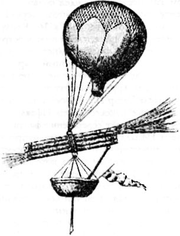
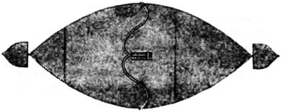

Космические аэростаты и дирижабли
К началу XX столетия история проектирования и строительства управляемых аппаратов легче воздуха в Европе насчитывала уже более века — с того дня, когда 5 июня 1783 года при большом скоплении жителей французского города Аннон братья Этьен и Жозеф Монгольфье запустили на высоту двух километров шар, изготовленный из шелка и наполненный горячим воздухом. Разумеется, сама идея появилась много раньше и к моменту взлета первого «монгольфьера» была обоснована теоретиками. Более того, еще в 1649 году известный своими неожиданными прожектами поэт и острослов Сирано де Бержерак описал в качестве одного из средств для полета к иным мирам именно воздушный шар.
Однако более подробное описание полета в космос на воздушном шаре дал другой литератор — знаменитый американский писатель Эдгар По. В своей повести «Необыкновенное приключение некоего Ганса Пфааля», изданной в 1835 году, он рассказывает совершенно фантастическую историю бюргера Пфааля из Роттердама, отправившегося на Луну на собственноручно изготовленном аэростате, наполненном смертельно ядовитым газом, который (по утверждению самого Пфааля) является «составной частью азота» и имеет плотность в 37,4 раза меньше плотности водорода. В качестве материала для оболочки космический путешественник использовал не традиционный шелк, а «кембриковый муслин», покрытый каучуком и тройным слоем лака. Объем шара составлял 40 тысяч кубических футов (1133 кубических метра), что позволяло ему поднять на произвольную высоту самого Пфааля, припасы в дорогу плюс 79 килограммов балласта.
Весьма примечательно, что в этой повести Эдгар По постоянно ссылается на существовавшую в то время теорию, согласно которой разряженный воздух распространен до границ Солнечной системы и сгущается у планет. Этой теорией пытались, в частности, объяснить отклонения в траектории кометы Энке и различные эффекты, наблюдаемые астрономами при прохождении планет на фоне Солнца. Подобная гипотеза значительно расширяла рамки применимости аппаратов легче воздуха и, как следствие, направляла творческую фантазию ученых и инженеров в русло выработки самых невероятных проектов, которые сегодня вызывают лишь усмешку.
Впрочем, монгольфьер, управляемый теплом горелки, недолго очаровывал ученый люд. Почти сразу появились предложения совместить баллон, наполненный легким газом, с двигателями прямой реакции, позволяющими менять направление и скорость полета в зависимости от воли аэронавта

Летом 1784 года два парижских изобретателя аббат Миоллан и господин Джаннинэ придумали реактивный монгольфьер. Они полагали, что если в боковой части воздушного шара сделать отверстие, то нагретый воздух, выходя из отверстия, будет сообщать шару движение в сторону противоположную той, где находится отверстие. Для опытов ими был построен огромных размеров монгольфьер, но вследствие сильной тяги, вызванной боковым отверстием, шар во время наполнения вспыхнул и сгорел.
В 1831 году в Венеции было издано сочинение «Открытие, как управлять воздушным шаром». В нем анонимный автор описывал применение ракет, подвешенных к шару. Их энергии, по его мнению, достаточно для того, чтобы достичь даже Луны. Поворотами труб можно менять направление движения этого необычного корабля.
В 1843 году в российских газетах появились сообщения об изобретении, сделанном военным инженером Эмилем Жиром, который утверждал, что решил проблему управления полетом воздушного шара с помощью созданного им механизма, позволявшего шару «находить» благоприятный ветер путем автоматического набора высоты или снижения без сбрасывания балласта или подкачки газа. Жир намеревался осуществить подъем и спуск с помощью реактивной силы, для чего предусматривался запас сжатого воздуха в гондоле и ручной компрессор для пополнения этого запаса.
Спустя шесть лет Эмиль Жир направил губернатору Кавказа графу Воронцову рукопись объемом в 208 страниц, озаглавленную «О способах управления воздушным кораблем» и подписанную псевдонимом «инженер Третесский».
Третесский намеревался снабдить воздушный корабль выхлопными соплами, направленными во все стороны. Для движения в каком-то направлении требовалось соединить соответствующее сопло с «генератором реактивной струи», если использовать современную терминологию. Реактивная сила создавалась струей сжатого воздуха, пара или воздуха, подогреваемого спиртовой горелкой.
В 1866 году в Санкт-Петербурге вышла в свет небольшая книжка капитана 1-го ранга Николая Михайловича Соковнина «Воздушный корабль». Аппарат, описанный в ней, относился уже к типу дирижаблей и управлялся турбореактивным двигателем.
Мягкая оболочка дирижабля наполнялась аммиаком, заключенным в 12 баллонетах. Последние помещались в ячейках ложкообразной оболочки, разделенной одной продольной и пятью поперечными перегородками на соответствующее число камер, открытых снизу. К оболочке на вертикальных стержнях подвешивалась платформа, на которой должны были располагаться люди и двигатель. Материалом для корпуса и платформы служил особый картон (изобретенный венгром Черлением), бамбук и трубчатая сталь. Длина корабля составляла 50 метров, вес — 2623 килограмма. Движение кораблю придавала реактивная воздушная струя, создаваемая алюминиевым турбореактивным двигателем и проходящая через систему труб.

Дирижабль Соковнина трудно было бы отнести к «космическим» проектам, если бы сам Николай Михайлович не рассмотрел такую возможность в своей книге, предложив модифицированную конструкцию корабля, снабженную пороховыми ракетными двигателями.
И в более поздние времена выдвигались проекты дирижаблей с реактивной тягой. В 1892 году мексиканский инженер Николас Петерсен взял патент на дирижабль, приводимый в движение ракетным двигателем.
Непосредственно под оболочкой дирижабля Петерсена размещалось пассажирское помещение с окнами. На корме имелась впадина, в которую вставлялся раструб в виде усеченного конуса, узкий конец которого примыкал к особому барабану револьверного типа, заряженному ракетами. Барабан мог вращаться вокруг двух осей. Одна ось позволяла барабану вращаться вокруг горизонтальной оси при помощи рычага, другая — позволяла барабану поворачиваться вокруг вертикальной оси при помощи винта и зубчатой передачи. Ракеты, помещенные в барабан, последовательно подрывались при помощи электрического запальника. Управление направлением полета достигалось за счет поворота всего кормового ракетного двигателя вокруг упомянутых двух осей.
Этот проект, интересный по идее, малопригоден на практике, так как имеется целый ряд неудобств: движение будет происходить толчками, разрушительными для конструкции дирижабля; регулировка и замена ракет должна была производиться вручную, что утомительно и ненадежно; не продумана безопасность от взрыва
После того как научно-исследовательские полеты на свободных аэростатах (и более поздние — на стратостатах) опровергли теорию о том, что с высотой плотность и состав воздуха не меняются, проекты «космических» дирижаблей с ракетными двигателями сошли на нет. Но интересные идеи, по-видимому, никогда не исчезают бесследно. В последнее время заговорили о так называемых комбинированных реактивно-аэростатических системах. Действительно, ничто не мешает использовать «дармовую» энергию выталкивающей силы, заменив первые ступени тяжелых ракет-носителей баллонами с водородом. Более того, этот водород можно затем использовать в последующих ступенях.
Есть и примеры использования реактивно-аэростатической схемы на практике. В британском проекте «Рокун» использовался аэростат типа «Скайхок», который поднимал геофизическую ракету в точку старта, находившуюся на высоте 25 километров.
Не так давно американская фирма «Боинг Эйрплейн» спроектировала тороидальный баллон, предназначенный для подъема и запуска космических ракет весом до 45 тонн. Максимальный диаметр баллона 95 метров, минимальный — 43 метра. Баллон разделен на 16 отсеков и выполнен из майларовой пленки. Этой же пленкой затянуто внутреннее отверстие тора. Проведенные исследования показали, что струя от двигателей ракеты не вызывает разрушение баллона, а значит вся конструкция может быть многоразовой. Баллон заполняется водородом или гелием, высота его подъема с ракетой составляет 6 километров, скорость в горизонтальном направлении — 120 км/ч. Последняя достигается при одновременной работе трех установленных на баллоне авиационных двигателей мощностью 3400 лошадиных сил. Двигатели закреплены на шарнирах, что позволяет аппарату маневрировать, парируя ветровые потоки.